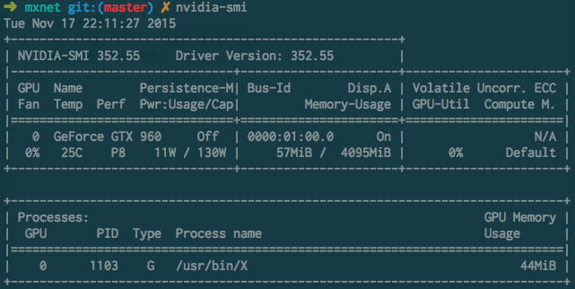
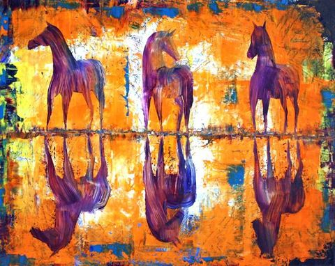
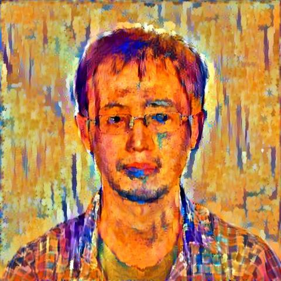
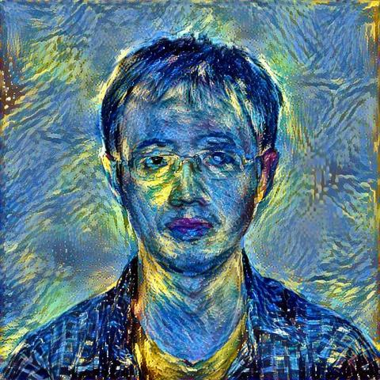

MXNet Neural Art
一直想试试自己搞一个类似Primsa的东西，但是因为各种原因耽搁了很久，一方面也是因为没有找到很好的这方面的教程。 直到前几天 @phunter_lau 在 微博 上贴出了这篇 文章. 很早就听说mxnet这个项目，据说性能和易用性都非常棒，所以下决心用mxnet试试。 安装mxnet非常顺利，运行过程也很快：用ec2上g2.2xlarge跑300epochs的话大约就在2分钟左右。
前面说到安装过程非常顺利，那只是安装mxnet过程很顺利，只需要configure; make一下就好了，但是安装CUDA确实花了很多时间。 这篇 文章 说道了如何安装CUDA和mxnet. 安装完成CUDA和nvidia driver之后，一定要运行nvidia-smi来确认nvidia driver安装成功了。 至少从我的经历来看，应该不太可能一次就安装成功，而且最后我选择了用runfile而不是deb来安装（声明我用的也是Ubuntu 14.04). 我建议大家也最好使用runfile来安装。
安装之前一定要阅读一下nvidia官方关于CUDA安装的 guide. 确认
- GPU支持CUDA
- Linux版本支持CUDA
- 安装了gcc
- 安装了linux头文件和开发包. `sudo apt-get install linux-headers-$(uname -r)`
- Disabling Nouveau. nouveau是nvidia gpu cards的一个开源驱动实现，但是估计nvidia不吃这套，坚持用自己的驱动.
修改完成后最好再重启一下，然后再运行runfile. 安装完成后最好运行一下`nvidia-smi`命令确认CUDA安装成功。

按照tutorial选择了几张不同的sytle images. 可能看到如果使用色彩不是特别浓烈的style images的话，最后生成的图片并不会有特别强烈的效果感，这些说明为什么许多实验都使用starry_night来作为style image.
 
